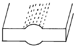
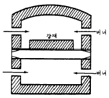
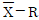
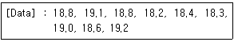
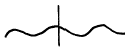
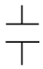
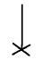

압연기능장 (2003-07-20 기출문제)
1과목: 임의 구분
1. 그림과 같은 스래브(slab)부품흠 결함의 발생원인이 아닌 것은?

- 트랙시간(track time)미달
- A1 점 이하의 뜨임처리
- 기공 및 가스의 집적
- 국부적인 압하량
(정답률: 66%)

2. 압연속도(Rolling speed)와 마찰계수와의 관계가 옳은 것은?
- 속도가 크면 마찰계수는 감소한다.
- 속도가 크면 마찰계수는 증가한다.
- 속도와 마찰계수는 관계없다.
- 항상 일정하다.
(정답률: 89%)
3. 열간압연과 비교한 냉간압연의 특징이 아닌 것은?
- 제품치수가 정확하다.
- 압연재 표면이 깨끗하다.
- 작은 동력으로 큰 변형을 얻는다.
- 기계적 성질이 우수하다.
(정답률: 85%)
4. 철강을 열간가공할 때 고온에서 나타나는 고온취성의 주원인이 되는 원소는?
- H
- S
- Si
- P
(정답률: 76%)
5. 균열로의 가열작업에서 중요관리 항목인 트렉타임(Track Time)의 정의로 맞는 것은?
- 용강주입 완료시부터 균열로 장입 완료까지의 시간
- 강괴의 가열시간
- 균열로 내 강괴개시부터 인출까지의 시간
- 균열로 내 로압 조정시간
(정답률: 76%)
6. Automatic Gauge Control(A.G.C)의 주 목적은?
- 판내 두께편차 조정
- 판내 성분편차 조정
- 판내 첨가성분 조정
- 판내 결함 조정
(정답률: 93%)
7. 중후판 압연에서 산화물(스케일)의 제거장치로 가장 적합한 것은?
- 고압수 스프레이
- 공기 취입
- 소재 가열
- 표면 도장
(정답률: 86%)
8. 0.2% C 강의 표준 현미경 주 조직은?
- Pearlite + Ferrite
- Pearlite + Graphite
- Ferrite + Graphite
- Cementite + Graphite
(정답률: 87%)
9. 강의 담금질 방법이 가장 옳은 것은?
- Ar'변태구역은 급냉시키고 Ar"변태구역은 서냉한다.
- Ar'변태구역은 서냉시키고 Ar"변태구역은 급냉시킨다.
- Ar' 및 Ar"변태구역 모두 서냉시킨다.
- Ar' 및 Ar"변태구역 모두 급냉시킨다.
(정답률: 78%)
10. 라우드식 3단 압연기에서 압연 소요동력을 줄이고 작업효율을 좋게하기 위해서 상하롤에 비하여 중간롤의 크기는?
- 무관하다.
- 같게 한다.
- 작게 한다.
- 크게 한다.
(정답률: 91%)
11. 그림과 같은 단면도는 어떤 형식의 가열로인가?

- 푸셔식
- 워킹빔식
- 회전로상식
- 롤식
(정답률: 85%)
12. 배치식 가열로의 설명 중 틀린 것은?
- 다량생산에는 부적당하다.
- 특수한 치수를 가진 보조적 가열에 많이 사용한다.
- 노상을 회전시켜 가열하는 방식으로 가열 하는데 적합하다.
- 연속적으로 작업하기가 곤란하다.
(정답률: 87%)
13. 열연 공장의 Run out table에서 가장 많이 이용하는 냉각방법은?
- Spray cooling
- Lamina flow cooling
- Jet cooling
- Mist cooling
(정답률: 87%)
14. 냉연강판에서 발생되는 결함과 관련이 가장 먼 것은?
- 선상 Scale
- Dull mark
- Reel mark
- Blow hole
(정답률: 86%)
15. 염산 산세시 스케일층과 염산의 반응에 의해 생성 되는 것이 아닌 것은?
- FeCl2
- H2O
- O2
- N2
(정답률: 86%)
16. 주로 소형재 압연에 사용하며 역전(逆轉)가능한 원동기 또는 장치의 특징을 지닌 압연기는?
- Shearing step mill
- Reversing tow high mill
- Double stop low mill
- One pass mill
(정답률: 84%)
17. 주철과 강의 분류는 탄소 몇 % 를 기준으로 하는가?
- 약 2.0
- 약 3.0
- 약 4.9
- 약 6.7
(정답률: 80%)
18. 열연 롤의 일반적인 사용조건으로 고려할 사항이 아닌 것은?
- 물로 충분히 냉각할 것
- 급격한 열팽창이 일어나지 않게 압연계획을 세울 것
- 국부적으로 집중하중이 장시간 걸리지 않게 할 것
- 크라운이나 테이퍼를 고려치 않고 롤면을 연삭할 것
(정답률: 92%)
19. 냉간압연에 영향을 주는 요인과 관련이 가장 적은 것은?
- 압연속도와 압연재료
- 마찰계수와 윤활유
- 재료의 조성과 공구
- 롤의 규격 및 전, 후방 장력
(정답률: 88%)
20. 핫 스트립 밀(hot strip mill)롤의 사용상 고려하여야 할 조건 중 틀린 것은?
- 압연유로 충분한 산화를 형성시킨다.
- 냉각수로 충분한 냉각을 한다.
- 급격한 열 팽창을 피한다.
- 국부적인 집중하중을 피한다.
(정답률: 88%)
2과목: 임의 구분
21. 압하율(%)을 나타내는 식은? (단, h1 은 압연 전, h2 는 압연 후의 두께임)
- h1-h2
- h1/(h1-h2) × 100
- (h1-h2)/h1 × 100
- (h1-h2)/(h2-h1) × 100
(정답률: 81%)
22. 중, 후판 등의 소재로 사용되는 것으로 두께 45∼90mm, 폭 350∼500mm 의 판용강편은?
- Tin bar
- Slab
- Skelp
- Hoop
(정답률: 74%)
23. 압연소재의 두께가 60mm, 폭이 70mm인것을 압연하여 압연 후의 두께가 45mm,폭이 88mm이라고 하면 압하량 과 증폭량은?
- 15mm, 18mm
- 14mm, 10mm
- 12mm, 8mm
- 12mm, 14mm
(정답률: 80%)
24. 압연전 두께 50mm, 폭이 50mm인 소재가 압연 후 두께 40mm, 폭이 60mm이라고 하면 감면비는 얼마인가?
- 0.66
- 0.78
- 0.88
- 0.96
(정답률: 72%)
25. 스케일제거 작업 중 하천사를 사용하는 가장 큰 이유는?
- 시임을 방지하기 위해서
- 코크스 연소에 의한 로저의 보온을 위해서
- 유동성을 증가시키기 위해서
- Cinder patch의 생성을 억제시키기 위해서
(정답률: 66%)
26. 단면이 65 × 6mm인 평철의 길이가 900mm일때 평철의 무게는 약 몇 ㎏인가? (단, 비중은 7.8로 한다.)
- 1.254
- 2.738
- 3.042
- 4.507
(정답률: 67%)
27. 지방산과 글리세린과의 에스테르를 주성분으로 한 윤활제는?
- 유지
- 광유
- 식물유
- 나프텐 계유
(정답률: 73%)
28. Hot strip mill 의 종류가 아닌 것은?
- 완전 연속식
- 배치(batch) 식
- 반연속식
- 드리쿼터 연속식
(정답률: 80%)
29. 강괴 전도기의 설비에 속하는 것은?
- Plazma shear
- Block shear
- Trimming shear
- Approch table
(정답률: 81%)
30. 판을 압연하는 경우 판이 활모양처럼 휘어지는 결함의 주 원인은?
- 롤 크라운을 적정하게 줄 때
- 적합한 압하를 부여할 때
- 과압하 또는 크라운 량이 부적절할 때
- 롤 윤활유를 사용할 때
(정답률: 85%)
31. 고속도 공구강의 기호로 맞는 것은?
- STC 3
- STD 11
- STS 1
- SKH 51
(정답률: 77%)
32. 특급 방진마스크를 사용해야 할 경우는?
- 용수처리장
- 급수관
- 납분진
- 냉각장
(정답률: 88%)
33. 작업롤 직경이 1000mm인 압연기에서 작업롤 회전수가 100rpm 이었다. mpm 으로 환산하면 약 얼마인가?
- 3.14
- 31.4
- 314
- 3140
(정답률: 77%)
34. 가열로의 열정산중에서 입열항목에 해당되지 않는 것은?
- 공기의 현열
- 연료의 현열
- 스케일의 현열
- 연료 무화제가 지입하는 열
(정답률: 89%)
35. 열간 압연용 윤활유가 구비해야 할 조건은?
- 압연재 표면에 균일하게 부착할 것
- 고온에서 산화성과 우수한 윤활성일 것
- 압연 후 냉각수와 쉽게 분리되지 않아야 할 것
- 압연재와 롤에 녹이 생기지 않고 유막강도가 작아야 할 것
(정답률: 57%)
36. 강판을 열간압연할 때 압연 롤 사이에 재료를 통과시키면서 양쪽 방향으로 왕복 압연하는 것과 관계가 가장 깊은 것은?
- 바우싱거 효과(bauschinger effect)
- 오렌지 필 효과(orange peel effect)
- 코트렐 효과(cottrel effect)
- 엘에스틱 효과(elastic effect)
(정답률: 92%)
37. 열간 압연 공장 중에서 수요자가 요구하는 제품 폭을 만족시키 위하여 폭내기의 압연을 실시하는 공장은?
- 청정공장
- 박판공장
- 풀림공장
- 후판공장
(정답률: 77%)
38. 냉간압연 공정의 순서를 나열한 것 중 옳은 것은?
- 냉간압연-표면청정-산세-조질 압연-풀림
- 풀림-산세-냉간압연-표면청정-조질 압연
- 표면청정-조질 압연-냉간압연-풀림-산세
- 산세-냉간압연-표면청정-풀림-조질 압연
(정답률: 89%)
39. 재료의 이송속도를 결정하는 레벨러와 시어 본체로 구성된 요동형 시어는?
- Stop cut shear
- Die cut shear
- Rotarying shear
- Flying shear
(정답률: 80%)
40. 양 가장자리(edge)를 제외한 부분의 Body crown이 발생하는 가장 큰 이유는?
- Roll의 휨
- Roll의 편평
- Roll의 평행도
- Roll의 속도
(정답률: 73%)
3과목: 임의 구분
41. 슬리브 조립식 롤에 있어서 몸체와 슬리브 사이의 슬립 발생에 의한 압연재의 판두께 변동을 방지하기 위한 것으로 틀린 것은?
- 끼우는 면에 특수 접착제를 바른다.
- 슬리브와 롤 몸체 단부를 나사링으로 고정한다.
- 요철부에 크라운을 두어 편심 발생시에 복원성을 크게한다.
- 롤의 지름이 작아지면 목부를 선삭한 다음 슬리브를 뺀다.
(정답률: 70%)
42. 롤에서 나오는 압연재를 90° 회전 또는 옆의 공형으로 수평 이동시키거나 필요한 때에 압연재의 위치를 정정하는 장치는?
- Guide와 guard
- Edger
- Peening gear
- Manipulator
(정답률: 86%)
43. 준금속(아금속)에 속하는 것은?
- Fe
- Si
- Mg
- Cd
(정답률: 77%)
44. 탄소강의 물리적 성질은 탄소함유량에 따라서 직선적으로 변하는데 탄소량 증가에 따라서 증가 되는 성질은?
- 열전도
- 비중
- 비열
- 열팽창계수
(정답률: 54%)
45. 가공용 알루미늄 합금을 용체화한 다음 자연시효 시킨 것은?
- T1처리
- T2처리
- T4처리
- T6처리
(정답률: 61%)
46. 은백색의 취약한 금속이며 비중이 약 5.32, 융점이 약 958.5℃ 이고 반도체적 성질을 이용하여 전자공업에 많이 이용되는 금속은?
- Ge
- Al
- Pb
- Fe
(정답률: 78%)
47. 500명이 근무하는 모회사에서 안전사고 6건에 8명의 재해자가 발생하였다. 이 회사의 재해 도수율은? (단, 연근로일수는 300일, 1일 근로시간은 8시간 임)
- 0.012
- 0.016
- 5.0
- 6.67
(정답률: 67%)
48. 입력신호, 타이머 및 카운터와 함께 사용되는 기능으로 신호가 입력 또는 만족될 경우 즉시 중단하고 미리 지정되어 있는 프로그램이 수행되며 지정된 프로그램이 완료됨과 동시에 전에 수행되던 프로그램 상태로 복귀하고 프로그램이 수행하도록 하므로써 긴급 및 비상업무처리 등을 위한 기능은?
- 시뮬레이션(simulation)
- 멀티프로세싱(multi-processing)
- 자기진단(self test)
- 인터럽터(interrupt)
(정답률: 79%)
49. 압연 설비의 윤활에서 롤링 밀의 피니언 기어에 적합한 윤활법은?
- 그리스 법
- 충전 법
- 스플래시 법
- 자연적하 법
(정답률: 48%)
50. CAD시스템의 입력장치 중 좌표나 위치정보의 입력에 사용되는 것은?
- 테블릿(tablet)
- 플로터(plotter)
- 프린터(printer)
- 하드카피장치(hard copy unit)
(정답률: 85%)
51. 유압장치에서 동작유의 오염은 기름을 손상시키므로 기기속에 혼입되는 불순물을 제거하기 위해 사용되는 것은?
- 패킹
- 밸브
- 축압기
- 스트레이너
(정답률: 90%)
52. 가열온도가 낮거나 충분히 균열되어 있지 않을 때 나타나는 현상 중 틀린 것은?
- 압연 중 온도의 저하
- 롤의 마모 및 절손
- 스케일 생성량의 급격한 증대
- 형상의 불량
(정답률: 81%)
53. 합금의 평형 상태도는 어떤 요소에 의해서 표시된 선도인가?
- 부피와 중량
- 농도와 온도
- 비중과 색깔
- 시간과 비열
(정답률: 74%)
54. 스테인리스강 중 오스테나이트계 성분인 것은?
- 크롬18%-니켈8%
- 크롬8%-주석18%
- 크롬17%-망간9%
- 크롬13%-납8%
(정답률: 91%)
55. 어떤 측정법으로 동일 시료를 무한 횟수 측정하였을 때 데이터의 분포의 평균치와 참값과의 차를 무엇이라 하는가?
- 신뢰성
- 정확성
- 정밀도
- 오차
(정답률: 67%)
56. 예방보전의 기능에 해당하지 않는 것은?
- 취급되어야 할 대상설비의 결정
- 정비작업에서 점검시기의 결정
- 대상설비 점검개소의 결정
- 대상설비의 외주이용도 결정
(정답률: 91%)
57. 관리한계선을 구하는데 이항분포를 이용하여 관리선을 구하는 관리도는?
- Pn 관리도
- U 관리도

관리도- X 관리도
(정답률: 54%)
58. 로트(Lot)수를 가장 올바르게 정의한 것은?
- 1회 생산수량을 의미한다.
- 일정한 제조회수를 표시하는 개념이다.
- 생산목표량을 기계대수로 나눈 것이다.
- 생산목표량을 공정수로 나눈 것이다.
(정답률: 72%)
59. 다음의 데이터를 보고 편차 제곱합(S)을 구하면? (단, 소숫점 3자리까지 구하시오.)

- 0.338
- 1.029
- 0.114
- 1.014
(정답률: 62%)
60. 공정 도시기호중 공정계열의 일부를 생략할 경우에 사용되는 보조 도시기호는?



(정답률: 74%)